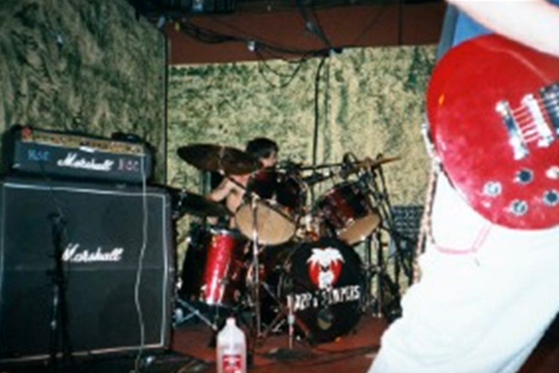

What is HAPPY CAMPERS?
Happy Campers is a band local band, based in Las Vegas. The band was founded by Isaac "Campa" Irvine in 1996; right after highschool. He formed the band with Lindy Pennington (Drummer) and Ben Montoya (Drums / Guitar). The band had a cultural influence on the small Las Vegas punk scene, often going to shows and playing n shit.
MUSICIAL STYLES AND THEMES
The Genre that Happy Campers falls under is punk.. ..obviously. Their music resembles bands like Green Day or Mute 98. Their Lyrics often tackle themes like relationships, politics and social commentary; often blending humor and serious topics together.
ORIGINS
The band began when Isaac, inspired by his true love for music, started to write songs after recieving a guitar for his high school graduation. He teamed up with his friends Lindy to help him play and form the band.
"My dad got me an acoustic guitar for high school graduation and I started writing a bunch of songs and poems. I taught myself how to play as most beginners do, by playing songs from my favorite bands such as Nirvana, Green Day and the Beatles. During this time I started to write my own songs as well. When I wasn’t accepted into Cal Poly and my parents had moved away, I had no home and nowhere to go. My best friend Lindy Pennington had moved to Vegas with his family so I figured I’d hang out there for a while."
-Isaac Campa
LEGACY & FAME
Happy Campers music has been featured in various media, including soundtracks for several shows and films; the most notable being 'bumfights', helping them gain a wider audience. They never grew to a ton of fame, but it still is a pretty FIRE band to listen to, and personally one of my favorites.
CONCLUSION
Happy Campers, led by Isaac "Campa" Irvine, has made a significant mark on the local punk rock scene of Las Vegas with their energetic songs and relatable, catchy lyrics. Their journey from local garage shows to a recognized band illustrates their dedication and passion for music, even if they never got as big as they should.
HOW I WAS INTRODUCED
I remember that I was just scrolling through youtube and one of their songs just popped up. I just gave it a listen and fell inlove with it! It was my first ever punk band that I ever listened to, and im glad that I started off with a great band!

Lindy Pennington playing the drums at a show. Date and location unknown.